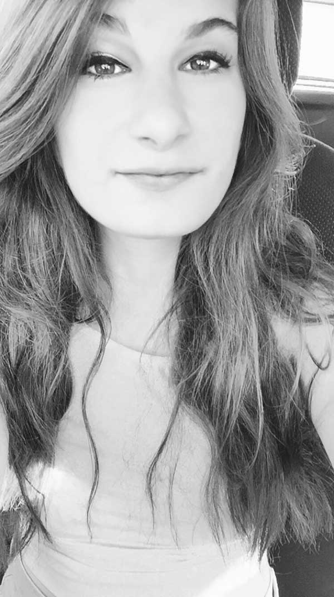

Jacqueline T. Levine
Multimedia Journalist
Address/Phone Number/Email (not listed for safety)
EDUCATION
B.S. Broadcast Journalism
Honors: Dean's List
B.S. Business Administration
Honors: Dean's List
EXPERIENCE
Reporter
- Produce media, write storylines, and shoot footage for the fitness segment of UMTV’s The Pulse
- Edit packages using Adobe Premiere Pro and ensure these packages are satisfactory for on-air broadcasts
Production Assistant
- Design graphics and review media use in on-air materials to ensure premier broadcasting experience
- Utilize professional sound equipment to balance external factors in the creation of high-performing audio media
Staff Writer
- Research and pitch relevant ideas for future stories that cover topics throughout the region and would interest the student body
- Compose concise articles in a timely manner for the Arts & Entertainment section of the paper
Copy Editor
- Launched and managed the UC Riverside branch of the publication
- Recruited and hired new writers
- Drafted over 20 pieces of various subjects that would entertain college students within the UCR community and throughout the United States and garnered thousands of views on articles
- Proofread and edited 10-15 weekly articles from all writers to ensure that all submissions are cohesive and error free
SKILLS
- Adobe Premiere Pro
- AP ENPS
- Editing
- Microsoft Office
- Knowledge with cameras including Sony PXW-Z100 and Canon 5D
- Spanish